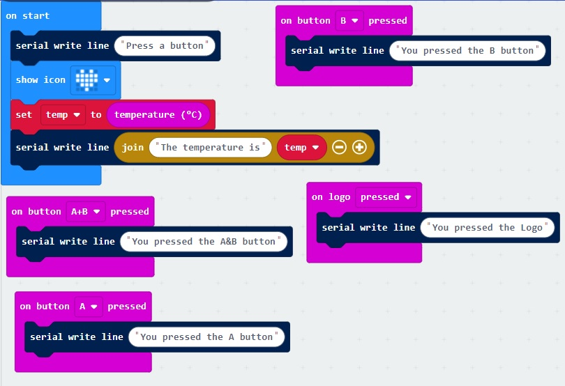

<h1>Serial Output</h1>
The microbit lets you output text strings to a console.   This is useful for debugging programs.<br>
Create this code: <br>
<br>
Press the  button<br>
Then press buttons on the left and see the result<br>
<hr>
